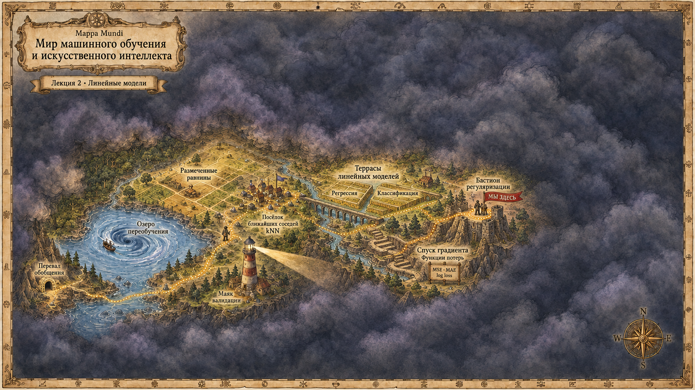
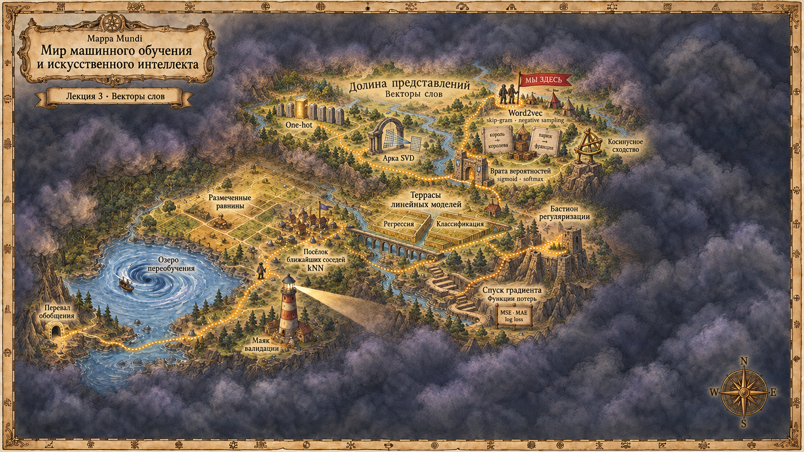

Вход
Вектор признаков задан заранее
Его не обучаем вместе с классификатором


Фиксируем данные, сравниваем параметры
Орёл кодируем единицей, решку – нулём. Наблюдаем четыре единицы и один ноль.
D=(1,1,1,1,0),p=P(y=1)L(0,8;D)=0,8⋅0,8⋅0,8⋅0,8⋅0,2L(0,8;D)=0,84⋅0,2=0,08192Перемножаем вероятности именно тех исходов, которые увидели.
Данные не меняются. Меняем только предполагаемую вероятность орла p.
L(0,3;D)=0,3⋅0,3⋅0,3⋅0,3⋅0,7L(0,3;D)=0,34⋅0,7=0,005670,08192>0,00567При этих данных модель с p=0,8 назначает наблюдённой последовательности большую вероятность.
Правдоподобие показывает, какую вероятность модель с параметрами θ назначает уже наблюдённым ответам. При произведении считаем ответы условно независимыми.
x(i) – признаки объекта, y(i) – ответ; n – число объектов, θ – параметры модели.
D={(x(i),y(i))}i=1nL(θ;D)=i=1∏npθ(y(i)∣x(i))Данные D зафиксированы. Это функция параметров, а не вероятность параметров после наблюдения данных.
Максимум правдоподобия равносилен минимуму отрицательного логарифма.
θ∗ – параметры в точке максимума; Q – среднее значение функции потерь по выборке.
θ∗=argθmaxL(θ;D)Q(θ)=−n1i=1∑nlogpθ(y(i)∣x(i))Логарифм сохраняет точку максимума и превращает произведение в сумму.
От скора к вероятности класса
Функциональный отступ зависит от масштаба весов; расстояние до границы равно ∣z∣/∥w∥2.
6 объектов; красные кружки: y=1, синие крестики: y=0.
w=2(cosα,sinα)T,b=0L(w,b)=i=1∏6p(y(i)∣x(i);w,b)Сейчас: 0,39551
| α | wT | L(w,0) |
|---|---|---|
| 0° | (2,00; 0,00) | 0,39551 |
| 60° | (1,00; 1,73) | 0,10436 |
| 120° | (-1,00; 1,73) | 0,00084 |
Данные не меняются. Для разных параметров получаем разное правдоподобие.
Значение функции потерь – минус логарифм вероятности наблюдаемого класса.
ℓ(y,p)=−ylogp−(1−y)log(1−p)ℓ(y,p)={−logp,−log(1−p),y=1,y=0.p – вероятность класса 1, которую выдала модель.
Подставляем вероятность p=σ(z) в бинарную кросс-энтропию.
p=σ(z)ℓ(y,z)={log(1+e−z),log(1+ez),y=1,y=0.ℓ(m)=log(1+e−m)m=z при y=1 и m=−z при y=0. Поэтому обе строки записываются одной формулой через отступ.
Для положительного объекта производная равна σ(z)−1, для отрицательного – σ(z).
∂z∂ℓ=σ(z)−yЗнак производной показывает, в какую сторону надо изменить скор.
| Метка | Скор z | σ(z) | ∂ℓ/∂z | Направление шага |
|---|---|---|---|---|
| y=1 | −1 | 0,269 | −0,731 | увеличить z |
| y=0 | 1 | 0,731 | 0,731 | уменьшить z |
Для положительного объекта z=4. Каково значение производной функции потерь по z?
σ(4)−1≈−0,018. Производная по скору мала.
Объект задан вектором x∈Rd. Для C классов настраиваем C векторов весов u1,…,uC.
zc=ucTx+bc,c∈{1,…,C}y=argcmaxzcbc остаётся отдельным свободным членом классификатора класса c.
Строка c матрицы W содержит параметры классификатора класса c.
W=u1T⋮uCT∈RC×d,b∈RCz=Wx+bВектор z∈RC содержит скоры всех классов.
Сначала требуем корректное распределение вероятностей по C классам. Softmax преобразует скоры zc в такие вероятности.
{0≤pc≤1,∑c=1Cpc=1.c=1,…,C,pc=p(y=c∣x)=∑j=1CezjezcКаждый класс участвует в знаменателе.
| Класс | zc | ezc | pc |
|---|---|---|---|
| Класс 1 | 2 | 7,39 | 0,665 |
| Класс 2 | 1 | 2,72 | 0,245 |
| Класс 3 | 0 | 1 | 0,090 |
| Сумма | 1,000 |
Если верен класс 2, то ℓ=−log0,245≈1,41.
ℓ(y,z)=−logp(y∣x)∂zc∂ℓ=pc−I[c=y]Скор верного класса нужно увеличить, скоры остальных классов – уменьшить.
Вероятность класса зависит от его скора и от скоров всех остальных классов в знаменателе softmax.
Для неверного класса производная по zc равна pc. При малой вероятности она мала, но не равна нулю.
Вектор признаков x задан заранее
Его не обучаем вместе с классификатором
Обучаем uc и bc для каждого класса
Из них получаем скоры zc
Пока настраиваем только параметры классификатора.
Принимает одно значение из конечного набора
Между категориями нет естественного порядка, как и между метками классов
Красный: (1,0,0)
Зелёный: (0,1,0)
Синий: (0,0,1)
Каждой категории соответствует отдельная координата
Код 1,2,3 создал бы искусственный порядок между цветами.
Токен – один элемент, полученный при разбиении текста на части.
«кот мирно спит»
Последовательность символов
кот · мирно · спит
В примере получилось три токена
На этой лекции один токен – одно слово.
Слова (токены) – тоже категориальные значения. Кодируем их one-hot: V – размер словаря; здесь V=4.
oкот=(1,0,0,0)Toпёс=(0,1,0,0)T«Василий пил кофе с ___, и ему было очень сладко». На место пропуска подходят «сахаром» или «шоколадкой» заметно лучше многих других слов.
Однозначного ответа может не быть. Контекст меняет условные вероятности слов.
| Предложение | Повторов |
|---|---|
| кот ест корм | 2 |
| пёс ест корм | 2 |
| кот мирно спит | 1 |
| пёс мирно спит | 1 |
| самолёт быстро летит | 1 |
У слов «кот» и «пёс» одинаковые контексты: «ест» встречается дважды, «мирно» – один раз
Если слова встречаются в похожих контекстах, их векторные представления также должны быть похожи
Эту гипотезу требуется проверить после обучения
При этом «кот» и «пёс» ни разу не стоят рядом в учебном корпусе.
| Центр | ест | корм | мирно | спит | быстро | летит |
|---|---|---|---|---|---|---|
| кот | 2 | 0 | 1 | 0 | 0 | 0 |
| пёс | 2 | 0 | 1 | 0 | 0 | 0 |
| самолёт | 0 | 0 | 0 | 0 | 1 | 0 |
Фрагмент матрицы совстречаемости A. Минус: при V=100000 у каждого слова 100000 координат, а в полной матрице 1010 ячеек. Вектор информативный, но огромный.
Высокая совстречаемость может отражать характерную связь слов или просто высокую частоту контекстного слова.
Поэтому значения таблицы часто нормируют относительно фоновой частоты. Здесь оставлена обычная частота пары, чтобы сохранить прозрачный пример.
A – матрица совстречаемости, Awc – частота пары (w,c). Строка w матрицы Q равна ewT, а строка c матрицы U равна ucT.
SVD, UV-факторизация. Разложение Холецкого – для симметричных положительно определённых матриц.
Приближаем матрицу A матрицей A ранга не выше d. Складываем квадраты ошибок во всех ячейках.
rank(A)≤dminw=1∑Vc=1∑V(Awc−Awc)2Решение даёт усечённое SVD: оставляем d наибольших сингулярных значений.
V координат совстречаемости
Для большого словаря хранить и пересчитывать дорого
d координат, где d≪V
Это компактное представление слова
В случае усечённого SVD строки описываются через проекцию на найденное подпространство.
Можно
swc – скор контекстного класса c для центрального слова w. Softmax превращает V скоров в вероятности.
swc=ucTewp(c∣w)=∑j=1Vexp(swj)exp(swc)ℓ(w,c)=−logp(c∣w)x задан заранее
uc обучается как вес класса
ew берётся из обучаемой таблицы
uc обучается как вектор контекстного слова
Градиент меняет обе стороны скалярного произведения.
| Где встретилось слово | Таблица | Вектор |
|---|---|---|
| в центре окна | Q | ew |
| в контексте другого слова | U | uc |
| Кандидат c | скор swc | p(c∣w) | производная по swc |
|---|---|---|---|
| ест (верный) | 2 | 0,665 | −0,335 |
| корм | 1 | 0,245 | 0,245 |
| летит | 0 | 0,090 | 0,090 |
Для одной обучающей пары в знаменатель входят все V контекстных слов.
Нужно вычислить скоры для каждого кандидата, хотя в корпусе мы наблюдали только одно контекстное слово.
Функция потерь не задаёт целевые евклидовы расстояния между словами.
Бинарная классификация вместо нормировки по словарю
y=1: пара взята из текста
Например, (кот, ест)
y=0: контекст выбран случайно
В учебном варианте q(c)=1/V для каждого слова
q(c) – вероятность выбрать слово c шумовой процедурой. При равномерном выборе каждое слово имеет вероятность 1/V.
Берём пару (w,c) из текста и k случайных контекстов n1,…,nk. Оцениваем вероятность метки «пара из текста».
P(y=1∣w,c)=σ(swc),swc=ucTewℓNS=−logσ(swc)−i=1∑klogσ(−swni)Это не вероятность того, что слова вообще встретятся рядом, и не p(c∣w) из full softmax.
| Пара | y | s | P(y=1∣w,c) | ∂ℓ/∂s |
|---|---|---|---|---|
| (кот, ест) | 1 | 1,2 | 0,769 | −0,231 |
| (кот, летит) | 0 | 0,8 | 0,690 | 0,690 |
| (кот, быстро) | 0 | −1,0 | 0,269 | 0,269 |
Это отдельная учебная инициализация, не продолжение примера с реконструкцией.
eкот=(1, 0,5)Tuест=(0,8, 0,8)T,uлетит=(0,4, 0,8)T,uбыстро=(−0,8, −0,4)Ts=(1,2, 0,8, −1,0)Каждое значение s – скалярное произведение центрального и выбранного контекстного векторов.
Индекс j перебирает один контекст из текста и k выбранных шумовых контекстов.
j∈{c,n1,…,nk}∂ew∂ℓ=j∑(σ(swj)−yj)uj∂uj∂ℓ=(σ(swj)−yj)ewОбновляется центральный вектор и выбранные на шаге контекстные векторы.
Все градиенты посчитаны по старым векторам, затем одновременно обновлены eкот и три выбранных uj.
uестnew=(0,823, 0,812)T∇eℓ=(−0,124, 0,259)T,eкотnew=(1,012, 0,474)Tℓ:1,748⟶1,665Новые значения s: 1,218, 0,698, −1,033.
| Фрагменты искусственного корпуса |
|---|
| кот · пёс · волк · лиса · медведь |
| яблоко · груша · слива · вишня · персик |
| поезд · автобус · трамвай · метро · такси |
Для каждого списка берём четыре порядка слов. Окно – два слова слева и справа. Из этих последовательностей получаем пары для обучения.
Среднее значение функции потерь: 3,986 → 0,363
15 слов, искусственный корпус. Векторы двумерные. Цвета не участвуют в обучении.
При достаточно низком s эта пара всё слабее влияет на следующий шаг.
ℓ−(s)=log(1+es)dsdℓ−=σ(s)s→−∞⇒σ(s)→0Жёсткого порога нет: при любом конечном s градиент остаётся ненулевым.
| Full softmax | Negative sampling | |
|---|---|---|
| Что предсказывается | какое слово оказалось в контексте | из текста или из шума пришла пара |
| Выход | p(c∣w) | P(y=1∣w,c) |
| Что участвует в шаге | все V контекстов | одна пара из текста и k случайных пар |
f(c) – эмпирическая частота контекстного слова c в обучающем корпусе. Формула нормирует веса и задаёт распределение q.
q(c)=∑j=1Vf(j)3/4f(c)3/4Степень 3/4 уменьшает перевес самых частых слов по сравнению с выбором пропорционально частоте.
Две таблицы обучались вместе; теперь выбираем представление слова и проверяем результат
Универсально лучшего варианта нет.
| Слово | e | Косинусное сходство с «кот» |
|---|---|---|
| кот | (1, 1) | 1 |
| пёс | (0,9, 1,1) | 0,995 |
| самолёт | (−1, 0) | −0,707 |
Оба слова помогают предсказывать «ест» и «мирно». Поэтому их центральные векторы много раз обновляются через одни и те же контекстные векторы.
Направления могут сблизиться, но это не гарантия: результат зависит от корпуса, окна, шума и хода оптимизации.
Берём ew
Считаем cosine с другими словами
Выбираем top-k
Смотрим на соседей в контексте нашей задачи
Координаты эмбеддинга никто не задавал вручную. Для предсказания контекста модели пришлось подобрать векторы слов – строки матрицы Q.
Предсказывающую часть можно отложить, а матрицу Q – таблицу обученных векторов слов – использовать в других задачах.
| Постановка | Что дано | Что минимизируется |
|---|---|---|
| классификация | (x,y) | отрицательный логарифм вероятности класса |
| факторизация | полная матрица A | квадрат нормы Фробениуса ошибки реконструкции |
| skip-gram NS | пары из окна и шума | сумма значений логистической функции потерь |
По этим трём ответам восстанавливается путь от корпуса до вектора слова.
Skip-gram, hierarchical softmax и negative sampling
Неявная матричная факторизация SGNS
Соглашения по обозначениям
